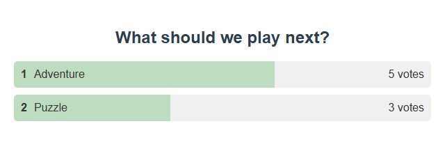

1. Werkzeug auswählen
| Ziel | In SSN öffnen |
|---|---|
| Chat über die nächste Aktivität abstimmen lassen | Grafische Umfrage → Umfrageoptionen |
| Zufälligen Teilnehmer wählen | Warteliste / Gewinnerauslosung, mit aktiviertem Gewinner-Auslosungsmodus |
| Zuschauer in Warteschlangenreihenfolge aufrufen | Warteliste / Gewinnerauslosung, mit deaktiviertem Gewinner-Auslosungsmodus |
Verwende den erzeugten Link aus diesem Abschnitt als OBS-Browserquelle. Lass SSN und Chatquellen aktiv und behalte Sitzung, Passwort und Serveroptionen des Links. Der Gewinnspiel-Werkzeug bietet einen separaten Pool mit Gewinnerkarte, Namensrolle und Community-Rad. Verwende sein Feld Giveaway Options für die eigenen Gewinnspielsteuerelemente; Wait List / Winner Draw bleibt unabhängig verfügbar.
2. Eine Multiple-Choice-Umfrage durchführen
- Öffnen Grafische Umfrage → Umfrageoptionen. Setze Umfragetyp auf Multiple Choice.
- Gib Was sollen wir als Nächstes spielen? als Frage und
Adventure, Puzzleals kommagetrennte Optionen ein. Setze Stimmenabgleich auf Nur exakte Stimme. - Lass Mehrere Stimmen pro Benutzer erlauben und Nach Spenden gewichtete Abstimmung für eine einfache Abstimmung mit einer Stimme ausgeschaltet. Aktiviere Umfrage aktivieren.
- Kopiere den erzeugten Umfragelink in OBS. Bitte Zuschauer,
1oder2als vollständige Nachricht zu senden. Passender Optionstext funktioniert ebenfalls. - Auswählen Umfrage beenden um die Abstimmung zu schließen. Notiere das Ergebnis, bevor du Umfrage zurücksetzen für eine weitere Runde.


Freie Umfragen akzeptieren Hashtag-Stimmen; Hashtag an beliebiger Stelle erlaubt einen Hashtag innerhalb einer längeren Nachricht. Aktuelle Umfrage speichern speichert eine wiederverwendbare Vorgabe, keinen dauerhaften Datensatz der Publikumsergebnisse. Wiederholte Stimmen desselben Abstimmenden werden ignoriert, sofern mehrere Stimmen nicht erlaubt sind.
Möchten Sie Ihre eigenen Farben, Schriftarten, Logos oder Layouts? Sehen Passen Sie Ihre grafische Umfrage an für OBS CSS, eine KI-Bearbeitungsaufforderung und Anweisungen zum Ausführen einer bearbeiteten Datei poll.html lokal.
Eigene Gewinnspielwerkzeuge
Eine Anleitung mit Screenshots findest du unter Dein erstes Gewinnspiel. Öffne Gewinnspiel-Werkzeug → Gewinnspieloptionen. Lege das Teilnahme-Schlüsselwort fest, wähle den Abgleich der exakten Nachricht oder eines einzelnen Worts und beschränke die Teilnahme bei Bedarf auf Mitglieder. Klicke auf Teilnahme öffnen, dann Gewinner ziehen wenn du bereit bist. Die Auslosung schließt die Teilnahme automatisch. Vor jeder Auslosung kannst du die Teilnahme mit denselben Regeln schließen und wieder öffnen. Neue Runde leert den aktuellen Pool, behält frühere Ergebnisse im Verlauf und lässt die Teilnahme geschlossen.
Wähle Gewinnerkarte, Namensrolle, oder Community-Rad, und einen von sechs Stilen. Die Vorschau verwendet erfundene Namen und tritt deiner Sitzung nie bei. Kopiere den erzeugten giveaway.html?session=YOUR_SESSION&managed Link in OBS. Die verwaltete Zuschaueranzeige enthält keine Bedienelemente oder Sitzungsdaten. Stil und Titel sind Linkeinstellungen; Teilnahmeregeln sind Host-Einstellungen, die beim Öffnen der Teilnahme gelten.
Verwaltete Anzeigen derselben Gewinnspiel-ID teilen den Host-Pool und den ausgewählten Gewinner. Kostenlose Schlüsselwortteilnahmen haben gleiche Chancen; bezahlte Auslosungen gewichten nach Ticketanzahl. Identitäten werden innerhalb jeder Plattform anhand von übermittelter Benutzer-ID, Benutzername oder Anzeigename dedupliziert; verschiedene Plattformen sind getrennte Identitäten. Bei deaktivierten mehrfachen Gewinnen wird jeder Gewinner aus dem berechtigten Pool der aktuellen Runde entfernt. Neue Runden erlauben diesen Zuschauern die erneute Teilnahme. Der Pool fasst bis zu 10.000 Teilnehmer; das Rad zeigt bei großen Pools eine Auswahl von höchstens 120 Namen, aber die Auswahl verwendet immer den gesamten berechtigten Ticketpool.
Lass SSN laufen. Runden werden lokal im Browser-/App-Profil getrennt nach Sitzung gespeichert. Ein Neustart schließt offene Runden zur Prüfung, löscht sie aber nicht. Das Neuladen einer Zuschauerseite ruft das aktuelle Ergebnis ab. Mitgliedschaftsbeschränkungen erfordern Quellen mit Mitgliedschaftsinformationen. Historische, erneut abgespielte, private, Bot- und reine Ereignisnachrichten sind ausgeschlossen. Kostenloser Teilnahmetext muss dem eingestellten Schlüsselwort entsprechen; der Spendenwert ändert die Gewinnchancen nicht.
API, Stream Deck und Event Flow
Dieselben Host-Aktionen bedienen Popup-Schaltflächen, die bestehende HTTP-/WebSocket-API und Stream Deck. Zum Sammeln von Teilnahmen oder Auslosen muss keine Gewinnspielanzeige geöffnet sein. Verwende in Event Flow die Gewinnspiel / Tickets Aktion. Siehe den Leitfaden zu Punkten und Automatisierung für bezahlte Tickets, Spielpreise und Integrationen.
| Aktion | Wirkung |
|---|---|
startgiveaway | Teilnahme vor der Auslosung öffnen oder fortsetzen. Optionaler Wert: {"giveawayId":"default","config":{"keyword":"!enter","match":"exact","membersOnly":false,"removeWinner":true}}. Behalte ohne ausdrückliche Regeln die Regeln einer bestehenden Runde oder verwende bei einer neuen Runde die Popup-Einstellungen. |
closegiveaway | Teilnahme schließen und den Pool behalten. |
drawgiveaway | Teilnahme schließen und einen berechtigten Gewinner wählen. Bei leerem Pool wird ein Fehler zurückgegeben. |
resetgiveaway | Leere Runde mit geschlossener Teilnahme erstellen; alte Runde und Gewinner archivieren. Offene bezahlte Reservierungen zuerst abbrechen/erstatten. |
getgiveawaystate | Teilnahmeanzahl, offenen/geschlossenen Zustand, Teilnahmeregeln und letzte Gewinner lesen. |
{"action":"drawgiveaway","get":"draw-1"}
Stream-Deck-Anfragen mit Protokoll 2 verwenden dieselben Aktionsnamen und erhalten zugeordnete Host-Antworten. Diese beschreiben den Gewinnspielzustand, nicht die OBS-Sichtbarkeit. Das ältere eigenständige Community-Rad bleibt verfügbar, wenn du managed; es hat einen eigenen lokalen Pool und wird nicht durch diese Host-Aktionen gesteuert. Sein lokaler Speicher ist jetzt nach Sitzung und Passwort getrennt, exakter Abgleich bedeutet die gesamte Nachricht, und die Auslosung verwendet sichere Zufallswerte.
3. Einen Gewinner ziehen
- Öffnen Warteliste / Gewinnerauslosung → Aktivieren und anpassen. Aktiviere den Auslöser und lege einen eindeutigen Befehl fest, etwa
!join. - Aktiviere Als Gewinner-Auslosung statt Warteschlange einrichten. Kopiere den aktualisierten Link in die OBS-Browserquelle.
- Nenne den Zuschauern den Teilnahmebefehl und eventuelle Berechtigungsregeln. Wenn du Nur Mitglieder können teilnehmen, prüfe zuerst, ob die Quelle Mitgliedschaftsinformationen liefert.
- Beobachte, wie die Teilnahmeanzahl steigt. Wähle Teilnahme stoppen nach Ende der Teilnahmephase, dann Gewinner auswählen.
- Verwende Liste herunterladen um Einträge vor Auslosung zurücksetzen leert die Runde.
- Teilnahme öffnen Zuschauer schreiben !join
- Teilnahme stoppen Pool schließen
- Gewinner auswählen Auswahl anzeigen
- Auslosung zurücksetzen Für eine weitere Runde leeren
4. Eine Zuschauerwarteschlange führen
Verwende dieselbe Wartelisteneinrichtung, schalte aber den Gewinner-Auslosungsmodus aus und kopiere die aktualisierte URL. Zuschauer treten mit deinem eingerichteten Befehl bei.
| Schaltfläche | Was du tun solltest |
|---|---|
| Obersten Eintrag hervorheben | Auf den nächsten Zuschauer aufmerksam machen. |
| Obersten Eintrag entfernen | Gehe weiter, nachdem dieser Zuschauer an der Reihe war. |
| Namen auswählen | Zufällig auswählen statt der Warteschlangenreihenfolge folgen. |
| Teilnahme stoppen | Warteschlange für neue Einträge schließen. |
| Liste herunterladen / Warteschlange zurücksetzen | Speichere eine TSV-Kopie und leere die Einträge nach Abschluss der Aktivität. |
Lege über die Wiedereintrittsoption fest, ob entfernte Zuschauer erneut beitreten dürfen. Optionale Wartelisten-Steuerungsbefehle sind auf Moderatoren/Host/Admins beschränkt: !wlstop, !wlremove, !wlreset, !wlpick, und !wlhighlight. Aktiviere diese bewusst; der Teilnahmebefehl für Zuschauer allein aktiviert sie nicht.
5. Üben und wiederherstellen
Verwende unterschiedliche erfundene Benutzer in Testnachrichten um Abstimmungs- und Teilnahmeverhalten zu prüfen. Eine Person auf zwei Plattformen ist nicht zuverlässig eine gemeinsame Identität. Prüfe das Ergebnis in OBS, bevor du Zuschauer zur Teilnahme einlädst.
- Keine Stimmen: prüfe „Enable Poll“, ob die Abstimmung beendet wurde, exakten Abgleich und ob dieser Benutzer bereits abgestimmt hat.
- Keine Teilnahmen: prüfe Wartelistenauslöser, exakten Befehl, gestoppte Teilnahme und die Nur-Mitglieder-Beschränkung.
- Anzahl, aber keine Liste: Gewinner-Auslosungsmodus zeigt einen Pool und Gewinner statt einer normalen Warteschlange.
- OBS zeigt etwas anderes: ersetze die gespeicherte URL, prüfe Sitzung/Passwort und vermeide unabhängig konfigurierte doppelte Umfrageseiten.
Für Hardwaretasten oder Schaltflächen in OBS siehe Stream Deck einrichten und OBS-Steuerungsdock.